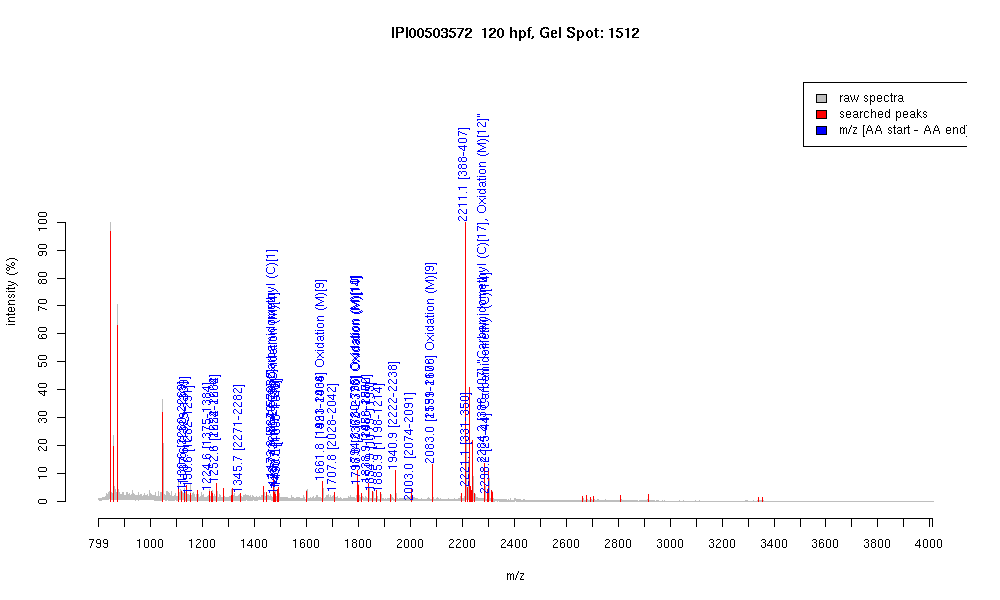

| Name | "PREDICTED: myosin, heavy polypeptide 1, skeletal muscle" |
|---|---|
| MW | 287431.3 |
| PI | 5.56 |
| Mascot Protein Score | 78 |
| Masses (matched / unmatched) | 24 / 47 |

| Peptide | MZ (calc) | MZ (observed) | Error (DA) | Error (PPM) | Start | Stop | Modifications |
|---|---|---|---|---|---|---|---|
| AALEQTERGR | 1130.5912 | 1130.5858 | -0.0054 | -5 | 2260 | 2269 | |
| NALAHAVQSAR | 1137.6123 | 1137.6115 | -0.0008 | -1 | 1329 | 1339 | |
| LQTENGEFGR | 1150.5487 | 1150.5693 | 0.0206 | 18 | 1282 | 1291 | |
| TKYETDAIQR | 1224.6219 | 1224.6294 | 0.0075 | 6 | 1375 | 1384 | |
| DAQLHLDDAVR | 1252.6281 | 1252.6295 | 0.0014 | 1 | 1654 | 1664 | |
| DAQLHLDDAVR | 1252.6281 | 1252.6295 | 0.0014 | 1 | 2222 | 2232 | |
| VAEQELVDASER | 1345.6594 | 1345.6722 | 0.0128 | 10 | 2271 | 2282 | |
| KVAEQELVDASER | 1473.7543 | 1473.7698 | 0.0155 | 11 | 2270 | 2282 | |
| CNAFQKPKPAKGK | 1473.7994 | 1473.7698 | -0.0296 | -20 | 564 | 576 | Carbamidomethyl (C)[1] |
| NTLMQSEIEELR | 1478.7156 | 1478.7216 | 0.006 | 4 | 2248 | 2259 | Oxidation (M)[4] |
| IEELEEEIEAER | 1488.7064 | 1488.7291 | 0.0227 | 15 | 1117 | 1128 | |
| QAFTQQIEELKR | 1490.7961 | 1490.7887 | -0.0074 | -5 | 1308 | 1319 | |
| LQGEVEDLMIDVER | 1661.8051 | 1661.8104 | 0.0053 | 3 | 1423 | 1436 | Oxidation (M)[9] |
| LQGEVEDLMIDVER | 1661.8051 | 1661.8104 | 0.0053 | 3 | 1991 | 2004 | Oxidation (M)[9] |
| QKYEEGQAELEGAQK | 1707.8184 | 1707.8097 | -0.0087 | -5 | 2028 | 2042 | |
| DEKLASLVTMTQALCR | 1794.9088 | 1794.8202 | -0.0886 | -49 | 780 | 795 | Oxidation (M)[10] |
| DLQHRLDEAENLAMK | 1798.8752 | 1798.8206 | -0.0546 | -30 | 2362 | 2376 | Oxidation (M)[14] |
| NSYEETLDQLETLKR | 1838.9131 | 1838.9165 | 0.0034 | 2 | 1488 | 1502 | |
| NSYEETLDQLETLKR | 1838.9131 | 1838.9165 | 0.0034 | 2 | 2056 | 2070 | |
| DLEESTLQHEATAAALR | 1854.9192 | 1854.9227 | 0.0035 | 2 | 1179 | 1195 | |
| QADSVAELGEQIDNLQR | 1885.925 | 1885.9323 | 0.0073 | 4 | 1198 | 1214 | |
| DAQLHLDDAVRGQEDMK | 1940.9131 | 1940.9352 | 0.0221 | 11 | 2222 | 2238 | |
| NLQQEISDLTEQIGETGK | 2002.9928 | 2002.9998 | 0.007 | 3 | 2074 | 2091 | |
| NSQRITDSMQSTLDSEVR | 2082.9722 | 2083.0103 | 0.0381 | 18 | 1591 | 1608 | Oxidation (M)[9] |
| NSQRITDSMQSTLDSEVR | 2082.9722 | 2083.0103 | 0.0381 | 18 | 2159 | 2176 | Oxidation (M)[9] |
| IGYLLGLNSADMLKALCYPR | 2211.1665 | 2211.1042 | -0.0623 | -28 | 388 | 407 | |
| EELVATDTAIDILGFNNEEK | 2221.0869 | 2221.1174 | 0.0305 | 14 | 331 | 350 | |
| IGYLLGLNSADMLKALCYPR | 2284.1829 | 2284.165 | -0.0179 | -8 | 388 | 407 | "Carbamidomethyl (C)[17], Oxidation (M)[12]" |
| VEAQNKPFDAKTACYVVDDK | 2298.1069 | 2298.1787 | 0.0718 | 31 | 25 | 44 | Carbamidomethyl (C)[14] |